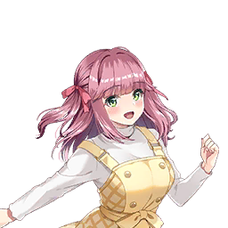

| 角色 | 对话 |
|---|---|
| 旁白 | 在外面吃完午饭后回到事务所时 |
|  阳葵真梦 | 我啊，要引退偶像身份， 作为一个普通女孩子去追求幸福...呜呜呜... |
| 旁白 | 真梦用手捂住脸，她的肩膀在颤抖。 |
| 制作人 | ...真梦，你在做什么？ |
阳葵真梦 | 呜诶！？ 噗噗噗噗......制作人先生...！？ |
| 旁白 | 真梦慌忙抬起头。 她脸红是因为哭了，还是因为羞耻呢？ |
阳葵真梦 | 这个嘛，那个... |
| 制作人 | ...又在看那个吗。 |
| 旁白 | 偶像在流泪，为什么我却如此平静。 那是因为最近经常看到这个场景。 |
| 制作人 | 真梦也看不腻啊。 明明都看到快背下来了。 |
| 旁白 | 我交替看着播放着陈旧影像的显示屏， 和至今眼中仍含着泪的真梦。 |
阳葵真梦 | 名场面看多少次都没关系哦... |
| 旁白 | 最近，真梦一直在反复观看往年著名偶像的演唱会影像。 而且只看宣布引退的最后演唱会部分。 |
| 制作人 | 真梦，你该不会是在考虑引退吧？ |
阳葵真梦 | 诶！？是说偶像吗... 我，还有好多好多想作为偶像去做的事情呢...！ |
| 制作人 | 不，抱歉。 说的也是啊。因为你只看偶像引退的影像，我还以为... |
阳葵真梦 | ...制作人先生，您太天真了！ 我看的不是偶像引退的影像， |
阳葵真梦 | 是偶像结婚时引退的影像啊！ |
| 制作人 | 诶？ |
| 旁白 | 真梦得意地挺起胸膛。 我确实没注意到，但为什么要看那种东西呢？ |
阳葵真梦 | 呃，之前不是在MiraiLink上接了婚礼相关的工作嘛。 |
阳葵真梦 | 从那天起，我就一直在想， 如果有一天我结婚了，要引退偶像身份的话，会变成什么样呢。 |
| 制作人 | 啊，原来如此。 |
阳葵真梦 | 试着重现了一下有名的引退场面， 结果感情太投入了眼泪停不下来... |
| 制作人 | ...真梦，你也想有一天结婚吗？ |
阳葵真梦 | 嘿嘿。我也是女孩子嘛！ 也会憧憬美好的婚姻生活——有这种心情哦。 |
阳葵真梦 | 但是结婚的话，就不能继续当偶像了吧。 |
| 制作人 | 唔——，也不一定这么说... |
| 旁白 | 偶像禁止恋爱，这种风气至今依然很强。 但比起以前已经宽容很多了。 偶像结婚也能被接受的氛围正在逐渐形成。 |
阳葵真梦 | 但是但是，很多人都是以结婚为契机引退的吧？ |
阳葵真梦 | 偶像是大家的憧憬...... 不属于任何人的状态才是最重要的。 |
阳葵真梦 | 所以我觉得，那位偶像一定也是以结婚为契机引退的。 |
| 旁白 | 真梦看着播放演唱会影像的显示屏。 画面虽然陈旧模糊，但能清楚地看到粉丝和偶像本人都带着悲伤的表情。 |
| 制作人 | ...我作为一个偶像粉丝，也很理解真梦说的话。 但是...... |
| 旁白 | 我把手伸进包里，寻找目标物品。 |
| 旁白 | 正好从同行那里拿到了票。 |
| 制作人 | 世事也没那么单纯啦。 喏，知道这个吗？ |
| 旁白 | 我把从包里拿出的票在真梦眼前摊开。 |
| 旁白 | 她确认了票上印着的偶像名字的瞬间，眼睛立刻闪闪发光起来。 |
阳葵真梦 | 这、这个......我，抽签没抽中啊！ |
| 制作人 | 我觉得现在的真梦正好需要这个。 托关系转让来的。 |
| 旁白 | 这是一位偶像的演唱会门票。 |
| 旁白 | 而且不是普通的偶像。 |
| 旁白 | 她曾一度结婚引退，历经十多年时光后重新开始活动。 |
| 旁白 | 其名为...... |
阳葵真梦 | 光桥依子酱！ 我爸爸可喜欢她了！ |
阳葵真梦 | 是以孩子们都成年了为契机，重新开始偶像活动的呢。 |
阳葵真梦 | 虽然是我们父母那一代的人了， 但真的好厉害啊——让人佩服！ |
| 旁白 | 看着兴高采烈讲述的真梦，我递给她一张票。 真梦像捧着宝物一样接过票，向我露出了灿烂的笑容。 |
| 制作人 | 记得这天没有工作安排吧。 一起去吧？ |
阳葵真梦 | 是，谢谢您！ 真的真的非常开心！ |
| 旁白 | 就这样在忙碌的日常中，转眼就到了演唱会当天。 |
阳葵真梦 | 哇～啊......真厉害呢！ 能包下这么大的会场。 |
| 制作人 | 嗯，而且还是满座。 昔日的荣光犹存啊。 |
阳葵真梦 | 哈啊...真希望我引退后， 就算过了几十年，也能有这么多观众来看我～。 |
| 制作人 | 想得真远啊。 首先得成为顶级偶像才行吧？ |
阳葵真梦 | 呵呵，说的也是。 不过，稍微做点梦也没关系吧～。 |
| 制作人 | 抱歉抱歉。 倒不如说，把真梦捧到那种程度，正是我的工作啊。 |
| 旁白 | 聊着聊着，演唱会的帷幕拉开了 。虽然比起现役世代的演出印象更为沉稳， 但这位昔日的偶像坚持完成了长达3小时的演出。 |
阳葵真梦 | 嘿嘿，真是超棒的演唱会呢～。 现在都还像做梦一样，总觉得身体轻飘飘的。 |
| 制作人 | 嗯，明明引退现役很久了，却还是那么有力量。 真不愧是曾经风靡一时的偶像啊。 |
阳葵真梦 | 会场的氛围也好热烈啊！ 还有两代人一起来的人呢。 |
阳葵真梦 | 大家都眼睛闪闪发亮，声嘶力竭地应援... 超越世代被爱戴，说的就是这种吧。 |
阳葵真梦 | 真的感到身为偶像的福分呢。 |
阳葵真梦 | 我重新下定决心，想成为那样的人！ |
| 制作人 | 真梦的话，一定能做到。 我觉得你充分具备那种可能性。 |
阳葵真梦 | 呵呵，您会帮我的吧？ |
| 旁白 | 真梦腼腆地握住我的手。 |
阳葵真梦 | 那样的话就更要慎重才行了。 在成为国民级偶像之前，要忍耐不结婚！ |
阳葵真梦 | 而且，能在引退之后复出也很重要... |
阳葵真梦 | 所以得找个能理解偶像活动、真心支持我的人才行。 |
| 制作人 | 真希望你能找到那样的人。 |
阳葵真梦 | 会找到的，一定！ 只要找个像制作人先生这样的人就行啦。 |
| 制作人 | 你是要我帮你找结婚对象吗？ 就算期待我当媒人这种角色也... |
阳葵真梦 | 不是啦！ 我是说，要找个像制作人先生那样理解偶像活动、真心支持我的人—— |
阳葵真梦 | 啊咧？ 那样的话，制作人先生作为结婚对象， 岂不是最理想的...... |
| 旁白 | 真梦移开了视线。 耳朵和脸颊眼看着就红了起来。 |
阳葵真梦 | 啊，啊哈哈......我在说什么啊。 |
阳葵真梦 | 这样简直像是在向制作人先生告白嘛！ |
| 制作人 | 真、真梦... |
阳葵真梦 | 啊，但、但是请不要误会哦！？ 不是讨厌制作人先生的意思... |
阳葵真梦 | 倒不如说，我可能还觉得那样挺不错的...... |
| 制作人 | 真梦，好好看前面——危险啊。 |
| 旁白 | 这句话，最终没能从我口中说出。 |
阳葵真梦 | 呀啊！？ |
| 旁白 | 真梦华丽地踩中了被乱扔的空罐子。 我瞬间抱住她的身体支撑住她。 |
| 旁白 | 那个瞬间—— |
阳葵真梦 | 嗯嗯......嘴唇上，传来柔软的触感。 |
| 旁白 | 睁开眼睛，真梦的脸就在极近的距离。 |
阳葵真梦 | 啊，啊咧？难道说，刚才... |
阳葵真梦 | 亲、亲到了？不会吧...啊哈哈。 |
| 旁白 | 真梦用手捂住嘴唇。 不是错觉。刚才，我和真梦的嘴唇确实接触了。 |
| 制作人 | 对、对不起...！ 那个，我不是故意的... |
| 旁白 | 真梦尴尬地移开视线。 气氛已经无法挽回了。 |
| 制作人 | 真的很抱歉... |
阳葵真梦 | ...请不要道歉。 |
| 旁白 | 真梦湿润了眼眸，直直地看着我。 |
| 旁白 | 那视线中蕴含的感情并非责备或轻蔑。 |
| 旁白 | 倒不如说那双眼睛，如同恋爱中的少女一般...... |
阳葵真梦 | ...如果是制作人先生的话， 也许可以...其实我真的这么想... |
| 制作人 | ...诶？ |
阳葵真梦 | ...诶。 请快点把我打造成国民级偶像哦？ |
| 制作人 | ...啊，嗯。明白了。 一起努力吧。 |
阳葵真梦 | 嗯呵呵...！ |
| 旁白 | 真梦迈开步子。我也慌忙追了上去。 真梦稍微放慢速度，走到了我身边。 我们慢慢地走着。 像两人三脚一样肩并着肩，一步一步地。 |